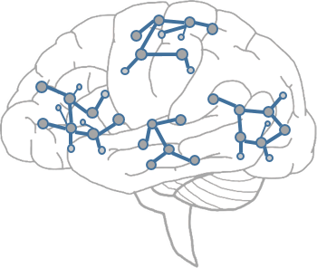

Blogs for Research
Here, I share my thoughts on different topics related to research. I hope to discuss with more people to inspire more ideas.:
Neuromorphic Computing - A Brief Reflection-1
Here are the characteristics of the brain-inspired systems we are currently building:
- Partially brain-inspired. The system we have built only partially references the characteristics of the brain. For example, it may only consider spike signals or aim to avoid catastrophic forgetting. Alternatively, the brain-inspired aspect might just be a gimmick, aligning with the existing hardware system without truly considering the real brain.
- Designed with a digital system mindset, along with its metrics. This is essentially a paradox. All our current hardware system designs are based on the abstraction brought by the accuracy and reliability of the digital domain. From the design of underlying devices, chips, circuits, systems, to upper-layer algorithm designs, all are based on this foundation. The cost of achieving such accuracy and reliability is the loss of information, as analog signals are quantified into digital signals. However, brain-inspired systems are often non-abstractable, processing information that includes noise. Therefore, the constructed system should function under the premise of noise. The noise here differs from the Gaussian noise we currently apply. To build a brain-inspired chip or system, the approach of "blind men touching an elephant" is infeasible. The more likely path is to find clues from neuroscience research on the brain's underlying mechanisms and abstract these into mathematical forms, gradually building a mathematical theoretical foundation for brain-inspired systems and basic prototype working models. This mathematics is not the discrete mathematics and binary on which digital systems are based, but more likely involves probabilistic mathematics
- Task locking. The tasks that current brain-inspired systems perform are those typically done by digital systems, and their metrics are similar, such as the accuracy and IOU of image recognition tasks, which is unreasonable. System-level metrics such as energy consumption and speed are reasonable. I now believe that brain-inspired computing lacks an "ImageNet moment" – a widely recognized task and performance metrics. Brain-inspired systems should focus more on areas where current digital systems perform poorly, such as reasoning ability and planning ability. The mathematical framework for these abilities should be established first, followed by the construction of prototype systems. It seems feasible to try many prototype system designs, but I believe that once the mathematical model is fixed, prototype system design can converge more quickly.
Blogs for Technologies
Here, I share my thoughts on different topics related to Technologies.
LLM Algorithms
Blogs for startups
Here, I share my thoughts on different topics related to startups.